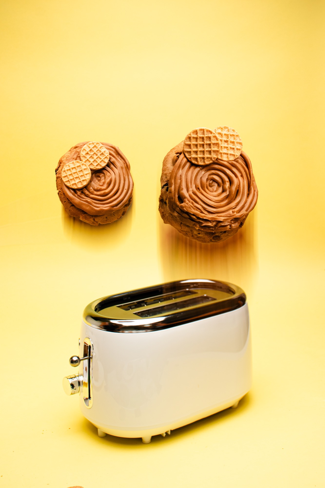

Food & Beverage Photography
Adrian
Rivera Ferran
Food & Beverage Photographer + Videographer
New York City · San Juan, Puerto Rico
Menu shots, product launches, and social video for restaurants and food brands. Stills and motion, concept through delivery.

Recent projects
Restaurant menus, product launches, and social video for food brands in New York City and Puerto Rico.

Chip City Cookies
Product Launches & Social Content
Product launches, menu drops, and social content for NYC's cult cookie brand — crookies, thinwiches, and seasonal releases, including the Chip City × Eggo collaboration.
New York City · 2023–2025 · Photographer & Videographer
Photo + Video


Food first. Always.
I'm Adrian Rivera Ferran, a photographer and videographer based in New York City, from San Juan, Puerto Rico. I make food look like itself on its best day — menu shots, product launches, and social content for restaurants and food brands.
Over the last eight years I've shot for Chip City Cookies, Massis Homemade Sandwiches, Brasa Astoria, Sobao Cidrines, Bodeguita Manolo, and Açaí Express, plus brand activations for McDonald's and Pepsi. Stills and motion, end to end — concept, capture, edit, delivery.
Available for freelance and full-time food & beverage content roles. Let's talk.
Services
Food & beverage photography
Menu shots, product stills, editorial. Styled, shot, retouched.
Social video
Reels, reveals, and launches — shot and cut for how people actually scroll.
Menu & product systems
Full menu coverage with consistent light and framing, delivered organized.
Brand campaigns
Activations and collaborations, stills and motion in one pass.
Let's work together
Bookings, full-time roles, or just to say hello.